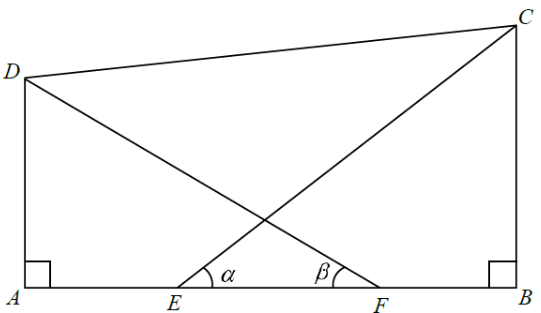

三角學 · 直角三角形中的比

$$AF=AE+EF=2x,\qquad BE=EF+FB=2x$$
即 $AF=BE=2x$，這是三條式子的共同基礎。
在 $\triangle BCE$（直角在 $B$）：$\sin\alpha=\dfrac{BC}{CE}$、$\cos\alpha=\dfrac{BE}{CE}$、$\tan\alpha=\dfrac{BC}{BE}$。
在 $\triangle ADF$（直角在 $A$）：$\sin\beta=\dfrac{AD}{DF}$、$\cos\beta=\dfrac{AF}{DF}$、$\tan\beta=\dfrac{AD}{AF}$。
$$CE\cos\alpha=CE\cdot\frac{BE}{CE}=BE=2x$$
$$DF\cos\beta=DF\cdot\frac{AF}{DF}=AF=2x$$
兩者相等，II 必定正確。
$$AD\tan\alpha=AD\cdot\frac{BC}{BE}=\frac{AD\cdot BC}{2x}$$
$$BC\tan\beta=BC\cdot\frac{AD}{AF}=\frac{BC\cdot AD}{2x}$$
兩者相等，III 必定正確。
$$AF\sin\alpha=2x\cdot\frac{BC}{CE},\qquad BE\sin\beta=2x\cdot\frac{AD}{DF}$$
一般情況下 $\dfrac{BC}{CE}\neq\dfrac{AD}{DF}$，故 I 不一定成立。